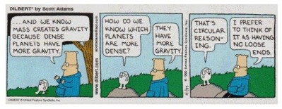

Dino Heresies
When it was first published in 1986, Robert Bakker's book, The Dinosaur Heresies, really was heretical.
Since it went into its eighth printing in 1996, it has become almost orthodox.
Here is the final sentence of the book.
|
When the Canada geese honk their way northward, we can say: "The dinosaurs are migrating, it must be spring!"
1
|
If this had been a mystery novel, I would have read the last chapter first  , and been so turned off that I might not have even bothered to read the rest of the book.
But then, one has to wonder what sort of logic (if one can call it that) would lead up to such a ridiculous statement.
In retrospect, I am glad I read it, because it sheds light on how some evolutionists think.
, and been so turned off that I might not have even bothered to read the rest of the book.
But then, one has to wonder what sort of logic (if one can call it that) would lead up to such a ridiculous statement.
In retrospect, I am glad I read it, because it sheds light on how some evolutionists think.
|
But we were convinced that the birds had inherited their heart-lung system and their warm-bloodedness from dinosaurs.
2
While Peter Galton and I [Robert Bakker] were at it, we also went one step further in our resurrection of the Dinosauria. We made them unextinct. We accomplished this by a simple rearrangement of the formal scientific nomenclature. We placed birds into the Dinosauria. And if birds are members of the Dinosauria, then dinosaurs are not extinct.
3
I proposed this sort of classification in 1975 in an article I published in Scientific American. Most taxonomists, however, have viewed such new terminology as dangerously destabilizing to the traditional and well-known scheme that has been with us since the time of Baron Cuvier. I cannot see any benefit to be gained by refusing to remove dinosaurs (and the therapsids) from the confines of the Reptilia. Classification is a type of scientific definition, and definitions should help express our perceptions of nature, not hinder them. As long as textbooks and museum labels unreflectively repeat the message "Dinosaurs are reptiles," it will be difficult to establish an intelligent debate about the true nature of the dinosaurs' adaptations. Some of the orthodox paleontologists act as though dinosaurs must be assumed cold-blooded until their warm-bloodedness is proved beyond any reasonable doubt. That is at least highly unscientific. And it certainly represents "argument by definition"--dinosaurs are reptiles, reptiles are cold-blooded, therefore dinosaurs were cold-blooded.
4
|
Actually, he simply wants to replace one argument by definition with a different argument by definition--birds are dinosaurs, therefore birds evolved from dinosaurs. Voila! There is the long sought proof of evolution.
Bakker's notion is really the driving factor in the dino-bird controversy. That's what makes the alleged discovery of a fossilized dinosaur heart so important. Passion about this issue has caused some scientists to lose their objectivity, and even create fake fossil evidence to support their claims. But those are issues we have dealt with before. We have other fish to fry here. We want to look at the logic that brought Bakker to his conclusion.
Circular Reasoning
|
Scott Adams gave an excellent example of circular reasoning in the Dilbert comic strip at the right.
|

|
The same sort of circular reasoning is evident on page after page of The Dinosaur Heresies.
Here is just one example.
|
Chameleons evolved from some "normal" lizard ancestor that possessed a thick, stiff collarbone which held the shoulder blade in place. But chameleons shed that collar bone along their evolutionary path to provide themselves with more participation from their shoulders in the strokes of their forelimbs. Dinosaur evolution must have been the same--dinosaurs experienced the same reduction of collarbone and must have developed a similar free swinging shoulder.
5
|
First, the statement is made that chameleons and dinosaurs lost their collarbones through evolution. Dogbert might ask how we know it was lost. Dilbert might answer that we know bones can be lost through evolution because there are so many examples. For example, chameleons and dinosaurs.
Some lizards have collarbones. Chameleons don't. That's pretty good evidence that they don't have a common ancestor. But evolutionists think it is proof of evolution. Follow their logic, and it will lead you around in a circle. Most lizards have collarbones. Chameleons don't--therefore chameleons must have evolved from lizards. So, if you want some proof for evolution, just look at chameleons. They must have evolved because they have lost their collarbones.
Class Labels
|
Mammals have their own zoological class. Although the "warm-bloodedness" of birds and mammals is very similar in physiological detail, it is quite clear that the "warm-blooded" condition evolved separately, once in birds, once in mammals.
6
|
Bakker is about to make a point about how man-made labels affect man's thinking. But before we let him continue in that vein, we want to digress for a moment. Bakker states categorically that warm blood evolved twice. The change from cold blood to warm blood is nothing short of miraculous, and he thinks the miracle occurred twice. Evolutionists also believe flight evolved independently four times (in birds, pterodactyls, bats, and insects).
Richard Dawkins believes that eyes have evolved independently at least 40 times.
7
This is called "convergent evolution". Evolution supposedly arrives at the same place through different routes.
Bakker fails to make the point that if we believe that the warm-blooded condition evolved only once, then that would affect our zoological classification system because the classification systems is based upon the presumed path of evolution. But let's let Bakker make a slightly different point.
|
Generally speaking badges are harmful in science. If a scientist pins one labeled "Reptile" on some extinct species, anyone who sees it will automatically think, "reptile, hmmm ... that means cold-blooded, a lower vertebrate, sluggish when the weather is dark and cool." There are never enough naturalists around, in any age; so most scientific orthodoxy goes unchallenged. There are just not enough skeptical minds to stare at each badge and ask the embarrassing question, "How do you know the label is right?"
8
|
We certainly agree that scientific orthodoxy should be challenged more often.
Fossil Evidence Against Evolution
Bakker grew up believing in the gradual progress of evolution as proposed by Darwin. But then, he became a paleontologist and realized that the fossil record really can't be reconciled with that belief. According to Bakker, gradual evolution has been disproved by the fossil record.
|
Anyone who cherishes the notions that evolution is always slow and continuous will be shaken out of his beliefs by Breakfast Bench and the other geological markers of cataclysm.
9
|
Therefore, he became a believer in "punctuated equilibrium", which says that species don't evolve for long periods of time, during which lots of fossils are produced. Then they evolve rapidly during times of ecological stress, during which no fossils are left. That's why, he says, it is so hard to find missing links.
He does have an interesting way of piecing together his view of evolution.
|
Sinking basins don't sink forever. If they did, it would be possible to read the entire fossil record of life from bottom to top in one mine shaft sunk into a single valley. Instead, to understand the changing habitats of the end of the Cretaceous, it is necessary to hop from state to state, basin to basin, in order to piece together the disjoint narrative in the sediment, much as silent-movie buffs might try to reconstruct an entire lost feature by splicing fragments of film found in a dozen different studio storage vaults.
11
|
I am reminded of an article in Mad magazine from the 1960s which featured "Commercial Roulette". In this article someone was watching TV with a (new-fangled) remote control and was switching channels trying to find one that wasn't showing a commercial. In the process he spliced together well-known advertising slogans in such a way as to produce a rather amusing story that had no basis in reality. (For example, starting with a Toyota commercial we might hear, "You asked for it-you got it [switch] Heartburn. That burning sensation you often get after [switch] Beverly Hills 90210.)
In the same way, Bakker has put together fossil fragments that don't necessarily have anything to do with each other. Bakker isn't the only one who does this. National Geographic tells us that the evidence for Heidelberg man consists of two teeth and part of a leg bone found in Boxgrove, England; a lower jaw found near Heidelberg, Germany; and a skull from Bodo, Ethiopia.
12
One example of how he splices things together is illustrated in his explanation of the horned dinosaurs.
Horned Dinosaurs
|
In the 1890s, horned dinosaurs confronted science with an evolutionary puzzle: These dinosaurs were so highly evolved for an aggressive defense that paleontologists were at a loss as to how such creatures could have descended from any other kind of beaked Dinosauria. Even the oldest horned dinosaur fossils from North America manifested the very complexly designed snout, horns, frill, and neck muscle attachments in a fully developed state. It was as though the horned dinosaurs had sprung directly from the mind of the Creator.
These Gobi Cretaceous dinosaur beds were totally different from the Judith and Laramie Deltas familiar to the American geologists. ...
When the scientists in New York unpacked the first crate-loads of dune rock from the Gobi, it was clear a dinosaur missing link had been found. The new dinosaur's name was a tribute to Andrews's leadership: Protoceratops andrewsi, "Andrews's ancestral horn-face." ...
Ptotoceratops and its close relatives must have swarmed over Asia, because their bones and nests of eggs are the commonest dinosaur fossils found in the widespread dune beds. But not one Protoceratops has ever been reported from the rich beds of the American Judith and Laramie Deltas. ...
The horned-dinosaur story shows how paleontologists can trace the major evolutionary events. Rarely do fossils yield a complete evolutionary sequence from mother to daughter to granddaughter species. Evolution is too bushy to permit such a straightforward story, too full of side branches. As clans evolved, the ever-branching species spread over the continents. Since fossils come from a few small areas, it is impossible to follow every stage of an evolutionary line. But it's possible to make out an overall progression of uncles and nieces, even when parent-daughter sequences cannot be found.
13
|
In other words, the fossil evidence suggested that the horned dinosaurs were created fully-formed. But rather than draw the obvious conclusion, they considered it "an evolutionary puzzle."
They could not find any evidence of ancestral horned dinosaurs in North America; but they did find some similar creatures in Asia that were "less advanced". (Of course the notion of "less advanced" presupposes evolution.) So they named them "protoceratops" and believe, without any evidence at all, that they migrated from Asia to North America where they evolved so rapidly into triceratops that they didn't leave any fossil trace. Meanwhile, the protoceratops that stayed in Asia didn't evolve. Furthermore, there isn't a sequence from mother to daughter. But there are lots of funny "uncles" and "nieces" that he claims as evidence that there must have been a progression.
He sees in the fossils what he wants to see. One can see a cloud that looks like a horse, but that doesn't mean clouds evolved from horses, or vice versa. Evolution is in the eye of the beholder. He sees fossils that he admits don't show an evolutionary sequence, yet he can "make out an overall progression ... even when parent-daughter sequences cannot be found."
Letting Cats out of the Bag
Bakker has a fundamental problem. He wants people to accept his new theories about dinosaur evolution. But dinosaur evolution has be taught as fact for so long, people believe it is true. How can he convince people that what they have been taught for so long isn't true?
Bakker knows how speculative and contradictory the orthodox evolutionary stories are. If everyone else knows how flimsy the evidence is for dinosaur evolution, they will be more receptive to his new story. So, he lets lots of cats out of the bag. The vast majority of the book consists of example after example of how the fossil evidence does not fit with the theory of evolution at all. Here is a small sample of things that scientists know about problems with the theory of evolution, but like to keep quiet. We present them without comment, and encourage you to read the whole book to find these statements in context, and see how many other similar statements there are.
|
Both groups [ankylosaurs and dome-headed dinosaurs] seem to have followed the wrong evolutionary path--their teeth are smaller, weaker, and less tightly packed than in the ancestral early beaked dinosaurs.
14
The Golden Age of the finbacks is, however, a sobering discovery for scientists who believe in the principle of extreme uniformitarianism. This theory insists that the evolutionary processes work the same way at all times. But there has never been another age of finbacks to compare with the Early Permian. And why this episode in the evolution of body organization should have remained unique is one of the great unsolved mysteries in the history of life.
15
Duckbills trace their lineage back to a gazelle-dinosaur; a small, long-legged, fast runner like Dryosaurus from Como. Dryosaurus possessed relatively longer toes than its duckbill descendants and thus might have paddled better. But according to the orthodox theory, Dryosaurus was strictly terrestrial in its habits, a confirmed landlubber, while the shorter-toed duckbills were supposedly committed to a watery life style. This paradox demands further scrutiny. Evolutionary processes are supposed to alter adaptations so that their possessors become better fitted to their new environments. But duckbills became progressively shorter-toed and therefore progressively worse adapted for paddling, the very habit they were supposedly evolving toward.
16
Since evolution supposedly made duckbills better swimmers than their ancestors, we should expect to find duckbills outfitted with very wide transverse bony spines. We find no such thing.
17
The sum of evolutionary evidence is thoroughly damning. In nearly every modification of the evolutionary process made in the duckbills as they developed from their dryosaur ancestors, the duckbills suffered a diminution of their swimming potential.
18
But like so much else in traditional dinolore, the standard story about feet and mud is not accurate.
19
Early beaked dinosaurs were bipeds, using hind legs alone for their fast locomotion. That presented a special design problem: They had to evolve a large digestive tract without upsetting the balance necessary for bipedal walking. ... Evolution was thus pulling in two opposite directions--shorter torsos provided better balance for running, but longer torsos were required by the need to deal with the problem of digesting leaves.
20
Pterodactyl's wrists are evolutionary chimeras, combining mechanical features found today in two or three different animal families.
21
... the chameleon has a stereoscopic rangefinder and fire-control apparatus unique among vertebrates.
22
The basic turtle shell itself is a most unusual structure that has evolved only through a bizarre bit of embryological hocus-pocus.
23
|
Reconstructions Based on Prejudice
What most people know (or think they know) about dinosaurs is based on the popular reconstructions of dinosaurs. What they don't realize is how little data there is, and how much imagination fills in the gaps. We hope you remember the pictures of Homo habilis and Nebraska Man we showed you in the March newsletter.
Sometimes, the reconstructions ignore what little data there is because the data doesn't agree with preconceived notions.
|
Charles Sternberg had published illustrations of those [dinosaur foot]prints in 1930, several years before Lull mounted his sprawl-elbowed beast. But Sternberg's diagrams showed right and left forepaws quite close to the centerline, and not widely spread apart. Lull simply ignored this, because he was so convinced, a priori, about splayed forelimbs that the obvious facts simply didn't register, as they still don't for some.
24
After reading Professor Seeley's Dragons of the Air, first published in 1901, I am at a loss to explain why the popular textbooks of the 1940s and 1950s portrayed pterodactyls as so faulty in design.
25
|
Are Birds Dinosaurs?
As we mentioned at the beginning of this essay, Bakker wrote this book to try to establish the theory that birds not only descended from dinosaurs, birds are dinosaurs.
Bakker claims birds are dinosaurs because they evolved from dinosaurs. This is important to evolutionists because once birds are classified as dinosaurs, then evolution must be true by definition.
Anyone smarter than a potato can see that birds are significantly different from dinosaurs. Birds are not dinosaurs. Yet the big lie technique (that is, if you tell a big lie often enough, and loud enough, people will accept it) seems to be working. Even Yale paleontologist John Ostrom believes it.
26
It used to be that dinosaurs were thought to be cold-blooded because they evolved from reptiles. Now it is believed that they are warm-blooded because they evolved into birds. They can't have it both ways.
Evolutionists have to deal with the issue of whether cold-blooded reptiles evolved into warm-blooded dinosaurs, or cold-blooded dinosaurs evolved into warm-blooded birds. The differences between cold blood and warm blood are so different, that they try to avoid it.
The possible discovery of a fossilized dinosaur heart has increased the level of debate. We addressed that discovery in the "Evolution in the News" column that we planned to run in this issue. Unfortunately, late-breaking developments forced us to delay that column until next month.
Footnotes:
1
Robert T. Bakker, The Dinosaur Heresies, 1996, Zebra Books, page 462
(Ev)
2
ibid. page 458
3
ibid. page 457
4
ibid. page 462
5
ibid. page 222
6
ibid. page 25
7
Richard Dawkins, Climbing Mount Improbable, 1996, W. W. Norton & Co. pages 139 - 140
(Ev+)
8
Robert T. Bakker, The Dinosaur Heresies, 1996, Zebra Books, page 27
(Ev)
9
ibid. page 39
10
ibid. page 45
11
"The First Europeans", National Geographic, July 1997, page 108
(Ev+)
12
Robert T. Bakker, The Dinosaur Heresies, 1996, Zebra Books, page 248
(Ev)
13
ibid. page 251
14
ibid. page 176
15
ibid. page 336
16
ibid. page 149
17
ibid. page 151
18
ibid. page 154
19
ibid. page 157
20
ibid. page 173
21
ibid. page 280
22
ibid. page 69
23
ibid. page 56
24
ibid. page 212
25
ibid. page 282
26
"Dinosaurs Take Wing", National Geographic, July 1998, page 92
(Ev+)